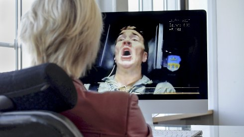

Franz Wanner
Franz Wanner born in Bad Tölz. After training as a photographer and studying film, he studied media theory and interdisciplinary projects at the Academy of Fine Arts in Munich. His cross-media artistic work appears in interdisciplinary contexts.
roulettepolar.net
Films Roulette Polar 2007 | Ein Dia-Abend von der Revolution 2008
Trafo 2013 | Eine Stadt unter Einfluss 2015 | Dual-Use 2016 | From Camp to Campus 2019 | Die Befragung 2019
From Camp to Campus
2019 | video, sound
10 min | HD | German
B+S: Franz Wanner | K: Matthias Kind, Christian Schmieder, Franz
Wanner
T: Jakob Sepp | Sprecherin: Verena Rendtorff | Mit Monika Schuck
As the "Luftfahrtforschungsanstalt" (Aviation Research Institute), the NS regime installed an armaments centre to the south of Munich, and forced laborers were used to build it. Military production has continued there to the present day. In 2013, the complex was named after NS engineer Ludwig Bölkow and designated a campus. While the structural documents of the former prison camp are being cleaned up, the Bavarian state government establishes its "Bavaria One" aerospace strategy at the site of the former forced labor.
cinema screening tuesday 15
oct 8.30 pm werkstattkino | short
film night